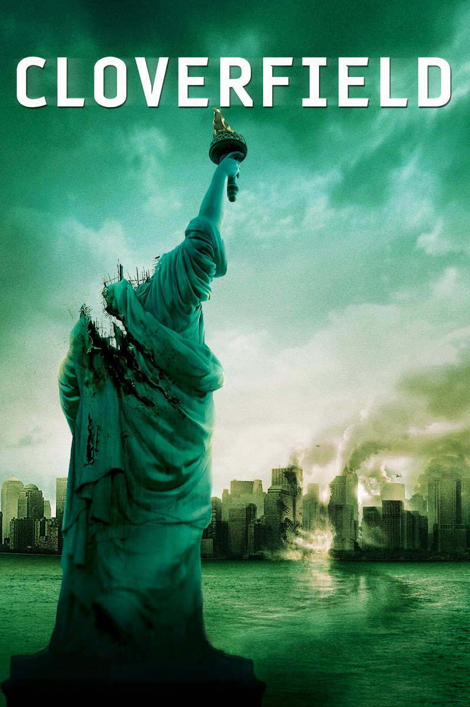

Мировая премьера: 18 января 2008
Слоган: Оно уже здесь.
Сюжет: Пока компания друзей в Нью-Йорке устраивает прощальную вечеринку, никто из них не подозревает, что эта ночь станет самой страшной в их жизни. На город внезапно нападает гигантское существо размером с небоскрёб, сея смерть и разрушения на своём пути. Пытаясь спастись среди охваченных паникой улиц, друзья снимают всё происходящее на любительскую видеокамеру. Их запись становится свидетельством отчаянной борьбы за выживание в городе, который стремительно превращается в руины.
Режиссёр: Мэтт Ривз
В ролях: Майкл Сталь-Дэвид, Джессика Лукас, Майк Фогель
| Майкл Сталь-Дэвид | Роб Хокинс |
| Джессика Лукас | Лили Форд |
| Майк Фогель | Джейсон Хокинс |
| Одетт Юстман | Бет МакИнтайр |
| Лиззи Каплан | Марлена Дайамонд |
| Ти Джей Миллер | Хад Платт |
| Тео Росси | Антонио |
Бюджет: $ 25 млн.
Кассовые сборы в США: $ 80 млн.
Кассовые сборы в мире: $ 172 млн.
Продолжительность: 1 ч. 14 мин.
Рейтинг: 7.0